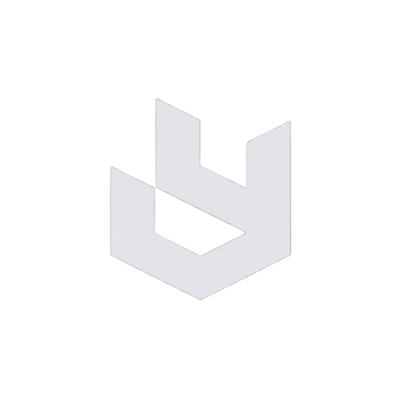

Ventures
Initiatives
Active & Past
UCA
Establishing the central hub for institutional club activities. The objective is to create a unified, scalable ecosystem that brings multiple student organizations and communities under one cohesive infrastructure.
Visit PlatformULIC
Built the premier technology community from the ground up. The initiative focuses on fostering a culture of technological excellence, modern web development, and peer-to-peer learning within the institution.
Visit PlatformMatrix : Origin
Leading executive operations and strategic planning for the 2024 to 2025 tenure. Orchestrating events, managing cross-functional teams, and driving organizational growth.
"Leadership is not just about management. It's about creating ecosystems where creativity and engineering can coexist to solve real-world problems."